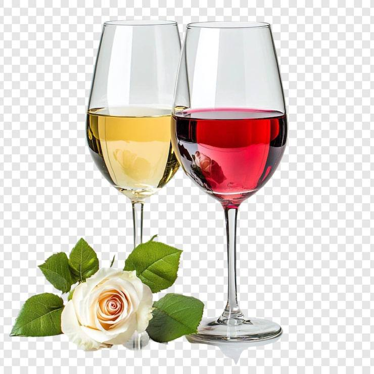
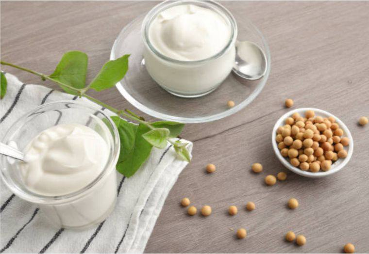
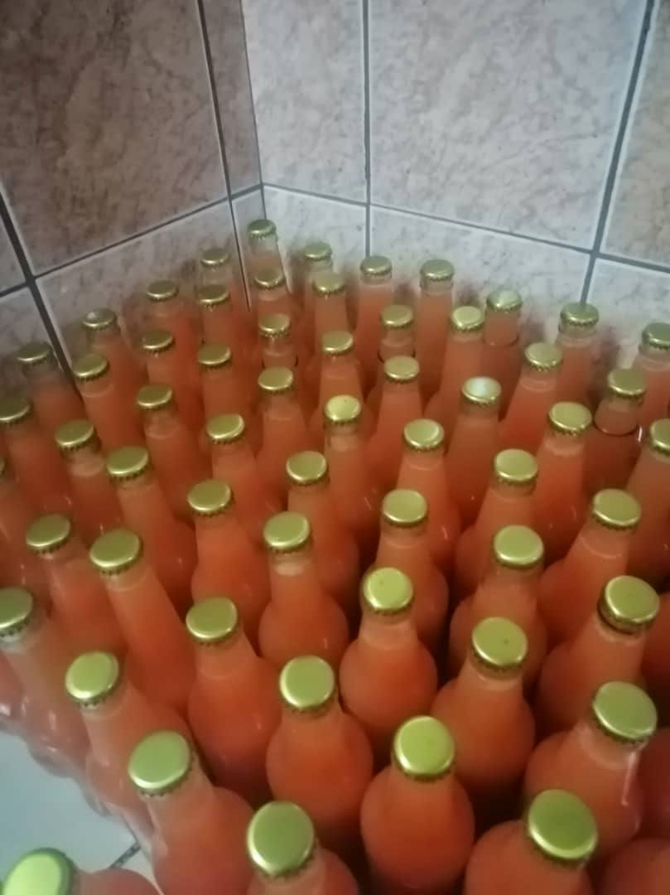

Nos produits
Yaourts de soja

Yaourt nature (250g)
Yaourt de soja naturel, sans lactose, fabriqué localement.

Yaourt fraise (250g)
Yaourt de soja aromatisé à la fraise — recette artisanale.
Vins

Vin rouge artisanal
Assemblage local, faible intervention — goût fruité et rond.
Jus naturels
Jus d'orange pressé
Pressé à froid, sans conservateurs.